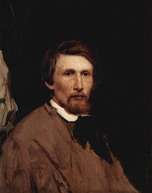
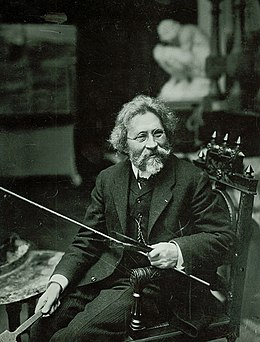
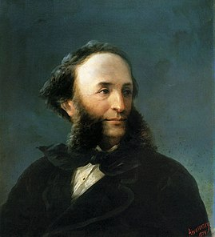

| Васнецов Виктор Михайлович |
15.05.1848 - 23.07.1926 |
 |
- «Витязь на распутье» (1882)
- «После побоища Игоря Святославича с половцами» (1880)
- «Алёнушка» (1881)
- «Иван-Царевич на Сером Волке» (1889)
- «Богатыри» (1881—1898)
- «Царь Иван Васильевич Грозный» (1897)
|
| Репин Илья Ефимович |
24.05.1844 - 29.09.1930 |
 |
- «Иван Грозный и сын его Иван»
- «Не ждали
- «Запорожцы пишут письмо турецкому султану»
|
| Айвазовский, Иван Константинович |
29.07.1817 - 02.05.1900 |
 |
- «9й вал»
- «Буря над Евпаторией»
- «Черное море»
- «Неополитанский залив»
- «Сумерки в бухте Золотой рог»
|